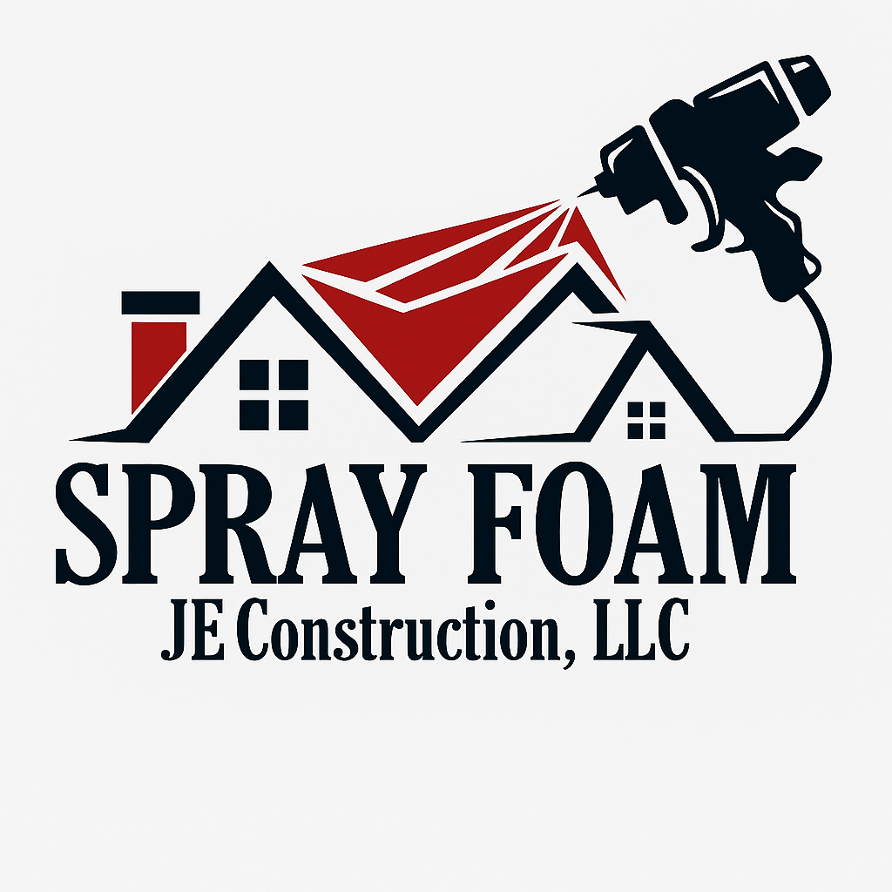
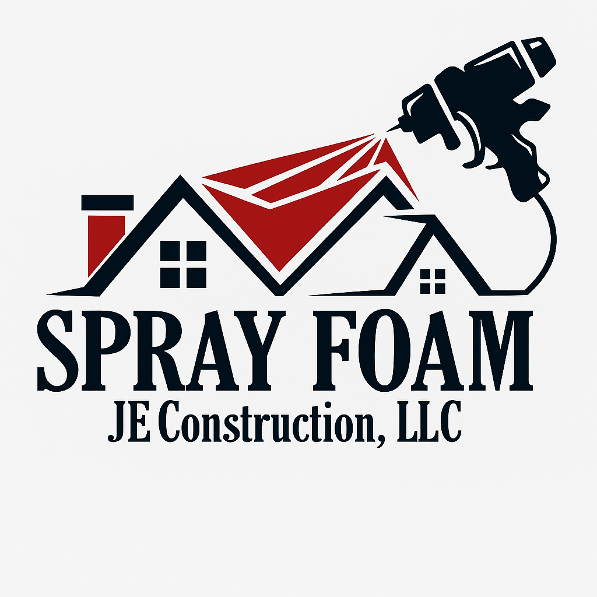
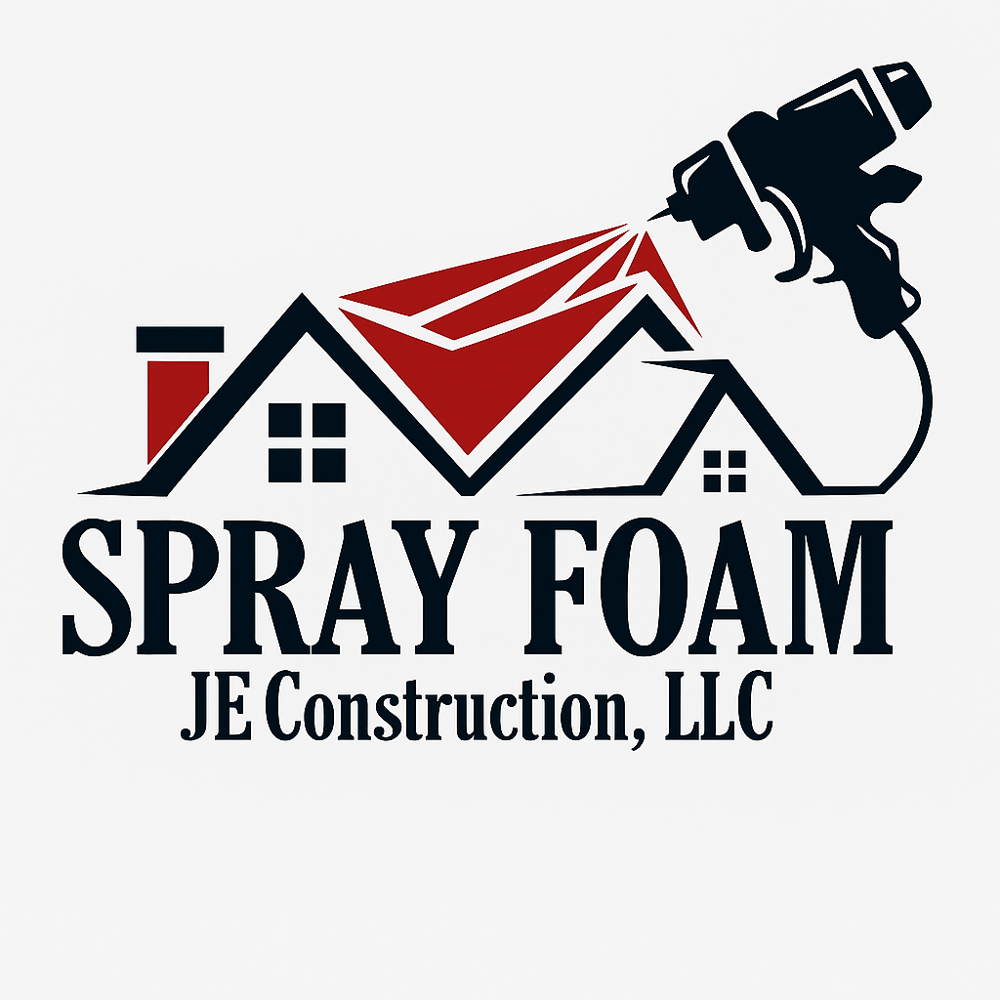

JE Construction LLC (DBA JE Spray Foam)
Serving Huron, South Dakota and Surrounding Areas

Serving Huron, South Dakota and Surrounding Areas
JE Construction LLC (DBA JE Spray Foam) is your one-stop solution for quality construction and insulation services throughout South Dakota and surrounding areas. We specialize in everything from general construction to energy-efficient insulation systems. Whether you're planning new construction, remodeling, or weatherproofing your home, we're the team to trust.
We offer FREE ESTIMATES – call us today or send us a message with your questions. No job is too big or too small. We take pride in honesty, quality work, and client satisfaction.
📞 Jose Escribano (Owner): 787-233-3313
📞 Ian Escribano (Sales): 605-350-6478
📞 Maria Rodriguez (Manager): 787-233-2207
📧 Email: sales@jeconstructiondoit.com
📍 Located in Huron, SD – Proudly serving all of South Dakota and surrounding areas
Facebook: JE Construction on Facebook